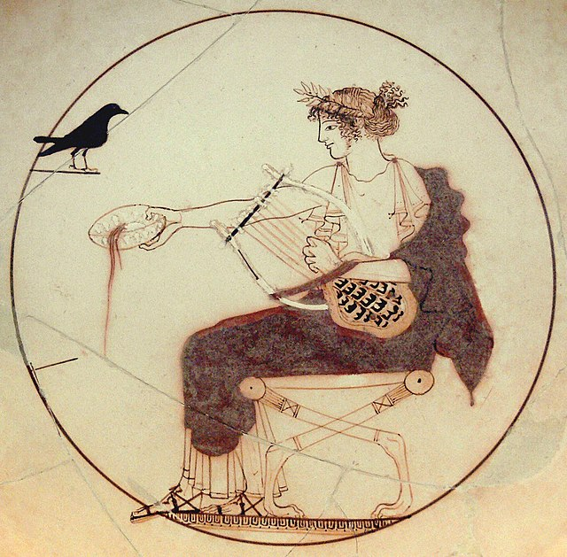
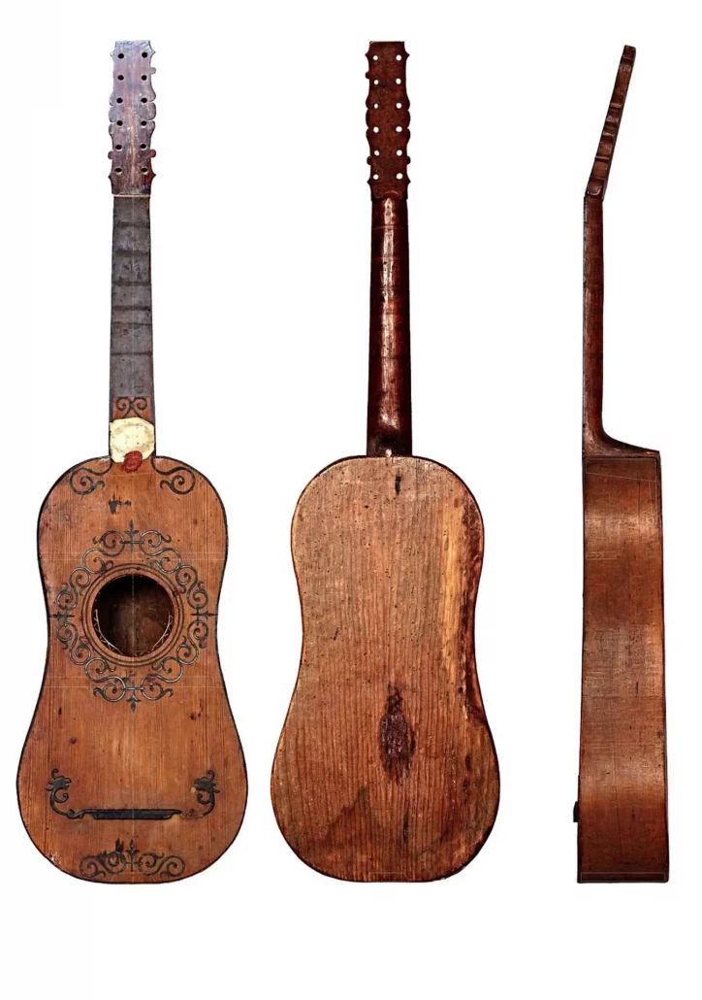
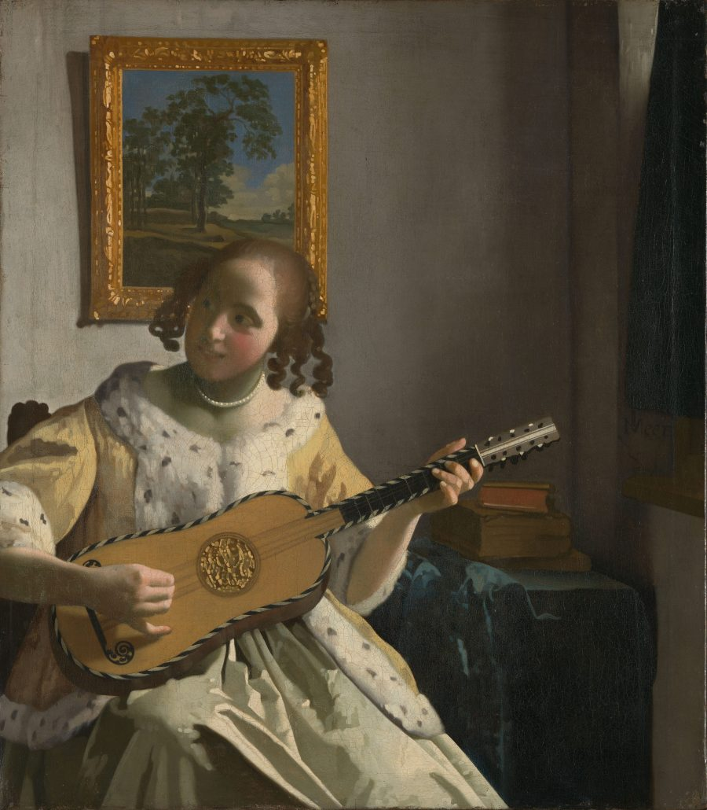
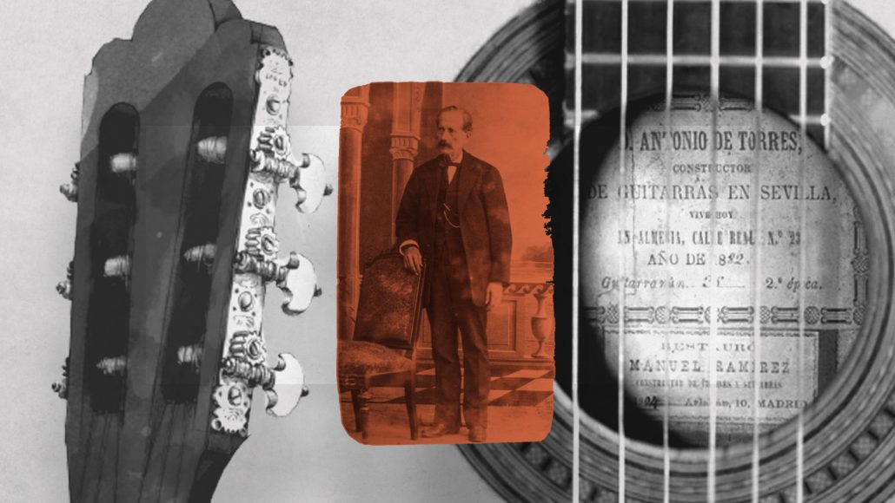
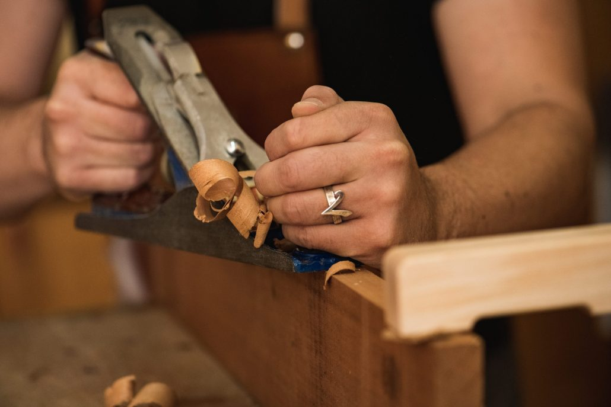

Un Viaje Melódico a través del Tiempo: La Evolución de la Guitarra
Orígenes Antiguos: Las Primeras Cuerdas Vibrantes
Los orígenes de la guitarra se pierden en la noche de los tiempos. Instrumentos cordófonos, antepasados lejanos de nuestra querida guitarra, han sido encontrados en diversas civilizaciones antiguas como la sumeria, la egipcia y la griega. La lira, por ejemplo, era un instrumento popular en la Grecia clásica, utilizado tanto para acompañar recitaciones poéticas como en ceremonias religiosas.

La Edad Media: Un Mosaico de Sonidos
La historia de la guitarra sigue durante la Edad Media, Europa se vio inundada por una gran variedad de instrumentos de cuerda pulsada. La vihuela, de origen árabe y muy popular en la Península Ibérica, fue un instrumento clave en esta época. Con su forma similar a la guitarra moderna y sus seis pares de cuerdas, la vihuela fue el instrumento favorito de los trovadores y juglares, quienes la utilizaban para interpretar canciones de amor, épica y sátira.
Otros instrumentos importantes de esta época fueron el laúd, de origen árabe, y la guitarra latina, de forma más redondeada y con menos cuerdas. Estos instrumentos se utilizaban en diversos contextos sociales, desde las cortes reales hasta las tabernas.
El Renacimiento: La Guitarra Renace
El Renacimiento marcó un punto de inflexión en la historia de la guitarra. La guitarra latina, con su caja de resonancia más pequeña y su sonido más dulce, se convirtió en el instrumento favorito de los compositores de la época. Músicos como Luis de Milán y Alonso Mudarra escribieron numerosas obras para guitarra, elevando este instrumento a la categoría de instrumento solista.

El Barroco: Nuevos Horizontes
Durante el Barroco, la guitarra continuó evolucionando, adaptándose a los nuevos estilos musicales. La guitarra barroca, con su diapasón más ancho y sus cuerdas de tripa, era un instrumento más versátil y expresivo que sus predecesores. Músicos como Gaspar Sanz y Francesco Corbetta compusieron obras para guitarra que exploraban nuevas posibilidades técnicas y expresivas.

El Clasicismo: La Era de Torres
El siglo XVIII fue un período de transición para la guitarra. Sin embargo, fue en el siglo XIX cuando se produjo una verdadera revolución en la construcción de guitarras gracias al trabajo del luthier español Antonio de Torres. Torres diseñó guitarras con una caja de resonancia más grande y un mástil más delgado, lo que permitió obtener un sonido más potente y un mayor rango dinámico. Las guitarras de Torres se convirtieron en el estándar de la guitarra clásica y siguen siendo consideradas como las mejores del mundo.

El Siglo XX: La Guitarra Conquista el Mundo
El siglo XX fue una época dorada para la guitarra. La guitarra clásica, gracias a la labor de guitarristas como Andrés Segovia, se convirtió en un instrumento de concierto respetado en todo el mundo. Al mismo tiempo, la guitarra eléctrica, inventada a principios del siglo XX, revolucionó la música popular, dando lugar a nuevos géneros como el rock, el blues y el jazz.

La Guitarra en el Siglo XXI: Un Instrumento Universal
En el siglo XXI, la guitarra sigue siendo uno de los instrumentos musicales más populares del mundo. Se utiliza en una amplia variedad de estilos musicales, desde la música clásica hasta el metal, pasando por el flamenco, el jazz y la música popular. La guitarra ha trascendido fronteras culturales y sociales, convirtiéndose en un símbolo de la universalidad de la música.
Aspectos a Destacar:
- Diversidad de modelos: A lo largo de la historia han existido numerosos modelos de guitarras, cada uno con sus propias características y sonidos.
- Influencia cultural: La guitarra ha sido influenciada por diversas culturas, desde la árabe hasta la española, pasando por la italiana y la francesa.
- Evolución tecnológica: Los materiales y las técnicas de construcción de las guitarras han evolucionado a lo largo del tiempo, dando lugar a instrumentos cada vez más sofisticados y versátiles.
- Papel de los guitarristas: Grandes guitarristas como Andrés Segovia, Jimi Hendrix, Paco de Lucía y muchos otros han contribuido a la popularidad y el desarrollo de la guitarra.
Conclusión:
La historia de la guitarra es un viaje fascinante que nos lleva desde las antiguas civilizaciones hasta nuestros días. La guitarra ha evolucionado y se ha adaptado a los gustos y necesidades de cada época, convirtiéndose en uno de los instrumentos musicales más queridos y versátiles del mundo.

¿Qué te ha parecido este recorrido por la historia de la guitarra? ¿Conocías algún detalle en particular?
¿Te gustaría tener tu propia guitarra personaliza y exclusiva? Pincha aquí.

Luthier artesanal en Los Alcázares (Murcia). Construye guitarras personalizadas e instrumentos de folclore en Vael de Ginés.